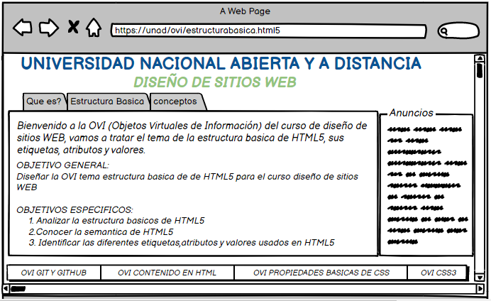

ESTRUCTURA BASICA HTML5(ETIQUETAS, ATRIBUTOS Y VALORES)
OBJETIVO GENERAL
Diseñar la OVI tema estructura basica de de HTML5 para el curso diseño de sitios WEB
Objetivos Especificos
- Analizar la estructura basicos de HTML5
- Conocer la semantica de HTML5
- Identificar las diferentes etiquetas,atributos y valores usados en HTML
MATERIALES
Textos
En los siguientes enlaces encontrara la definicion de HTML5
En los siguientes enlaces encontrara la estructura basica de HTML5
En los siguientes enlaces encontrara los conceptos de etiquetas y atributos
Videos
En los siguientes enlaces encontrara que es HTML
En los siguientes enlaces encontra videos cortos sobre la estructura de HTML5
CONTENIDO
Bienvenida
Bienvenido a la OVI (Objetos Virtuales de Información) del curso de diseño de sitios WEB,
vamos a tratar el tema de la estructura basica de HTML5, sus etiquetas, atributos y
valores.
Que es HTML5
Para iniciar debemos tener claro el concepto de que es HTML5:
HTML5 es la quinta version de HTML ( HYPER TEXT MARKUP LANGUAJE) que traducido seria lenguaje de
hiper texto marcado, es un lenguaje de etiquetas el cual sirve para definir la estructura basica
de la pagina WEB, esta versión trae como novedad el poder añadir audio y video sin necesidad de
un reproductor de multimedia por medio de la etiquetas video y audio, tambien se pueden crear
animaciones en 2D por medio de la etiqueta canvas; HTML5 es un lenguaje de programación gratuito,
se puede visualiazar el cualquier navegador, es compatible con los navegadores moviles esto significa
que las paginas que se vesualizan en el computador puedes ser adaptadas a los dispositivos moviles.
Estructura basica HTML5
la estructura de HTML5 es muy sencilla como se muestra en la siguiente imagen:

se inicia con los siguiente elementos !DOCTYPE html el cual nos indica que el documentos esta sobre HTML5, html representa
la raiz del documento HTML o XHTML, posterior a estos siguen los siguientes metadatos: head Colección de metadatos sobre el
documento, incluyendo enlaces a scripts y hojas de estilo. title Titulo del documento, se muestra en la barra superior del
navegador o en las pestañas de pagina, meta define los metadatos que no pueden ser definidos usando otro elemento HTML,
bodyRepresenta el contenido principal de un documento HTML. Solo hay un elemento body en un documento; una de las principales
ventajas de la version HTML5 son los elementos semanticos, que ayudan a definir las divisiones de la pagina WEB, este diseño se
muestra en la siguiente imagen:
header es la cabecera de lapagina o bloque de contenido, nav barra de navegación principal del sitio, article Define
unidades de contenido que podrían existir independientemente del resto del contenido, section define secciones de la WEB,
aside Puede contener todo tipo de contenido. Sin embargo, se suele utilizar para mostrar enlaces, footer Define el pie de
página. También se puede utilizar para definir el pie otros elementos.
Conceptos de elementos, etiquetas y atributos en HTML5
ELEMENTOS: HTML al ser un lenguaje de etiquetas tienen un conjunto de elementos que son la base de su estructura, estos elementos son una caja
de herramientas que se utilizan para dar forma al documento; estos son responsables del procesamiento y trasnformación de los elementos
en documentos representados.
ETIQUETAS: el documento en HTML esta compuesto por dos etiquetas: la etiqueta de apertura y la de cierre, una etiqueta
de apertura esta compuesta por el nombre del elemento encerrado por los simbolos menor-que y mayor-que , la etiqueta de cierre esta
constituida de igual menera que la apertura, pero en el nombre del elemento es precedido por una barra diagonal ("/").
ATRIBUTOS: es la forma que se tiene para definir las propiedades de un elemento, hay muchos atributos en HML5 conocidos como atributos globales
y estan disponibles para todos los elemtos estandar, son declarados indocando su nombre seguido de un signo igual ("=") y el valor asignado entre
comillas.
Maquetación

{kind=link}